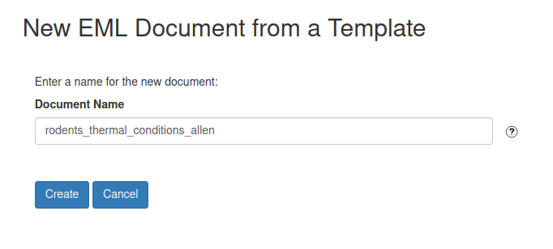

Publishing your research data: a guide to providing data and metadata
Overview
This guide details how to provide data and metadata to the CAP LTER Information Manager to publish your research data. The workflow employs the ezEML tool suite developed by the Environmental Data Initiative (EDI), where most LTER data are archived. ezEML facilitates generating metadata about the project (e.g., an abstract, methods) and project data, such as the meaning and units of measured variables.
As you navigate links to different sections in ezEML, you will provide information about various aspects of your research project and data. You will upload your data file(s) during the process such that, when finished, you will send a complete set of your research data and metadata to the CAP LTER Information Manger all within the ezEML system. ezEML will save your progress so you do not have to complete the entire process in one sitting.
In addition to this guide, ezEML also provides a helpful set of instructions.
A special note about spatial data (e.g., rasters, shapefiles): at the time of this writing (2022-08-12), ezEML does not facilitate providing metadata about spatial data specifically. To circumvent this limitation, spatial data should be included as an Other Entity.
getting started
Log into ezEML from the ezEML landing page.
You can log into ezEML with your Google, GitHub, or ORCiD credentials. Access to everything that you will enter is linked to your log in, so be sure to log in with the same method (Google, ORCID, or GitHub) each time you enter the site to update or add new metadata.
the CAP LTER ezEML template
The CAP LTER has provided a template that features boilerplate metadata. Please use this template to generate your metadata by selecting EML Documents ➜ New from Template....
Navigate to and select the CAP Basic Template under LTER/CAP/.
ezEML document title
Enter a name for the EML document. Note that this is not the title of your dataset but rather the name of your metadata document in ezEML. Give the document a meaningful name that will help you to identify the project/dataset if you need to revisit it in the future (likely).

Title: your dataset title
To get started, click on Title in the Contents catalogue to provide a title to your dataset. This will be the title of the dataset when published.
Just like journal article titles, dataset titles should be information rich and provide helpful context about the dataset. Ideally, the title should include information about the geographic and temporal extents of the dataset.
Once entered, click Save and Continue to save the title of the dataset. Again, you can revisit any content area so saving the document does not set anything in stone, it merely saves the ezEML document at that point.
Data Tables: tabular data
The Data Tables tool will allow you to upload tabular data files and provide metadata about each of the variables. On the Data Tables tab, use the Load Data Table from CSV File to open a navigation pane to select files.
As the name implies, tabular data must be in CSV format. If your tabular data are in Excel or ODT, you must export the data as a CSV file. If your Excel or ODT workbook contains more than one sheet, you must export each sheet as a separate CSV file.
Formulas, formatting, merged cells, and other features unique to spreadsheets will not translate to CSV so ensure the integrity of your data in CSV formatting if exporting from a spreadsheet.
Use the Browse button to locate the file on your computer. Once identified, click the Upload button to upload the contents of the data file to ezEML. Most users will not need to adjust the Field Delimeter or Quote Character properties but you can adjust these prior to upload if appropriate.
Once uploaded, ezEML will display some machine-readable details of the data that you have just uploaded. Please provide a brief description of the contents of the data file in the Description (Recommended) box. Most users will not need to edit any of the other details displayed on this page.
At the bottom of the window, ezEML has displayed the names of each of the variables in the data file. Your next step is to provide metadata about the variables by clicking the Edit Column Properties button.
Edit Column Properties will bring up a dialogue box featuring each of the variables in the tabular data file. ezEML has attempted to identify the variable type (e.g., numeric, text) but you can edit the variable type with the Change Type button corresponding to each variable. Generally, ezEML does a good job of identifying the correct data type but dates and times in particular can be problematic so be sure to double check variables of those types.
Dates and times should adhere to the ISO standard (e.g., YYYY-MM-DD hh:mm:ss).
Your next step is to provide needed metadata about each of these variables.
adding metadata for variables
Edit Properties will raise a dialogue for the selected variable like the one shown below. Provide a definition that describes what the variable represents. For numeric variables, you can but do not need to provide a unit of measure in the description, that will come later.
categorical variables
In the example below, we are editing the variable strata from a sample dataset, which is a categorical variable. Categorical variables do not have units but we do need to provide details about each of the category or factor levels. For example, our strata variable contains three unique categories or factors: A, B, C. The Edit Codes and Definitions button will raise a dialogue box where you can provide the meaning of each of these categories. Before doing that, on this page, you can also provide metadata about missing value codes, that is, any characters that refer explicitly to missing data (e.g., 9999, NA, NaN).
Again, you can use the Edit Codes and Definitions button to raise a dialogue box to provide the meaning of each of the categories. You can change the order of the categories with the arrows but this is optional, the critical point is that you adequately document each of the categories.
Press the Edit button corresponding to each category or factor level to add metadata for that particular entity. For example, below we provide a description for the meaning of factor level A of the strata variable in our sample dataset.
numeric variables
Numeric variables do not have categories or factor levels to document but you do need to provide a definition and unit of measure. When describing the unit of measure, refer first to the list of Standard Units in the drop-down menu. Standard units are pre-described in the metadata schema, which provides rich documentation about the unit. No worries if the unit of measure for the variable is not in the drop-down list. In that case, provide a name and description (optional but please!) of your custom unit.
Example:
Custom Unit
microsiemensPerCentimeter
Description (Recommended)
electric conductance of lake water in the units of microsiemensPerCentimeter (µS/cm)
Project Participants and Personnel
There are several personnel roles associated with a dataset, including Creators, Contacts, Associated Parties, and Metadata Providers. Use the links in the Contents menu to provide information about project contributors as appropriate.
The form for each role is basically the same, and allows providing the usual details, such as name, salutation, and address. The pertinent pieces are Last Name, First Name, Email, Organization, and, if available, ORCID ID. Enter as much additional information as desired but please be sure to at least provide the aforementioned details for each person.
If you or other project personnel do not already have an ORCiD ID, you should consider registering for one or suggest to your colleagues that they should. If you are not familiar, ORCiD is a digital identifier that uniquely identifies you as you, and is analogous to a social security number in the academic world. It is becoming standard practice to submit grants, articles, register for conferences, and other activities using an ORCiD ID so this is something that you will want (and soon may need) to have. It is free and easy to register for an ORCiD ID, and has the added benefit of making it much easier to generate biographical sketches.
role types:
- Creators: Creators are the dataset authors and/or primary project contributors. Dataset creator is equivalent to the author of a journal article or book. Just as with a journal or book, order matters and the creators should be listed in the order to which they contributed to the project or dataset.
- Contacts: Where any correspondence about the dataset will be sent. The CAP LTER Information Manager is the contact, so do not provide any information in this category.
- Associated Parties: People who contributed to the project in some way but who are not considered dataset authors. Someone who helped with some of the field or lab work, or who were involved with the overall project but not this particular dataset would be good examples of an associated party.
- Metadata Providers: You! Presuming that you are a dataset author, apologies that you will have to enter your information twice.
Abstract
Provide an overview of the dataset and the research behind it. This is analogous to the abstract of a journal article, but there are not any character limitations so please be generous with details.
If you cite any publications in this section, please include the full citation(s) with your text (as a bulleted list) so that the CAP LTER Information Manager can formalize them in the dataset.
It is not required but you may use markdown formatting in your abstract to increase readability. This formatting will translate to HTML when published, so bold text will appear bold, lists will be structured, etc.
To avoid copyright infringement, you cannot use the verbatim text from the abstract of a published work as the abstract of a dataset. So, for example, if your dataset is associated with a journal article, the abstract that is included as part of your journal article cannot be used here - they can be close, just not verbatim. It is not fair, we know.
Keywords
The CAP LTER will automatically associate a suite of project-specific keywords with your dataset but these are specific to the LTER project, and you should add additional keywords relevant to the research that will help potential users to locate your data through keyword searches.
The LTER maintains a vocabulary of standardized terms to aid searching for LTER data. You can access this list of keywords with the drop-down list on the top-right corner of the keyword dialogue box. Try identifying relevant keywords from the drop-down list first then add additional keywords (liberally) that are not in the drop-down list with the free-text box at the top-left of the dialogue. Enter, then Save and Continue for each keyword.
Dataset Coverage: geographic, temporal, and taxonomic
Geographic Coverage
Geographic coverage refers to the physical location associated either with data collection (e.g., field work), data analyses (e.g., spatial extent of a model), or both. There are a couple of ways to approach providing metadata about the geographic extent of the data.
One approch is to provide a single geographic description and set of bounding coordinates. So, for example, if you collected soil samples from multiple locations around central Arizona, you might provide a description noting the central Arizona region and something about the habitats where the sampling occurred, and a single set of bounding coordinates that would encompass all of the sampling locations into a single, square polygon.
Another approach is to provide separate, distinct geographic locations for each sampling location. Sticking with our soil sampling example from above, in this case, you might provide a description such as along the Salt River near the confluence of the Gila River in central Arizona, and provide the coordinates of that specific point. You would repeat this process for each sampling location. This latter approach is more information rich but not always necessary or relevant. Either approach is acceptable.
Coordinates must be provided as latitude and longitude in decimal degrees.
Temporal Coverage
Provide here project start and end dates. Specifically, these should be the start and end dates associated only with data collection, and should not include time spent, for example, analyzing data.
Taxonomic Coverage
If relevant (do not consider humans), provide details of the taxonomy of organisms featured in the study. You can provide these metadata through the Taxonomic Coverage link in the Contents menu.
For each taxon, highlight the scientific name and taxonomic resolution of the organism using the Taxon Scientific Name and Taxon Rank drop-down lists, respectively. Details of most organisms are available through ITIS but draw upon different taxonomic authorities with the Taxonomic Authority drop-down if appropriate. Once you have identified the details, use the Fill Heirarchy button to have ezEML construct a full taxonomy for the organism. Save and Continue, then repeat for each taxon.
Methods
Document the methods used to collect and process the data, and the analysis if relevant. This is a very important component of the dataset as detailed methods are essential for a potential user to be able to interpret the data, and interpret the data accurately, for reuse. Please provide a rich description of your methodology.
If you cite any publications in this section, please include the full citation(s) with your text (as a bulleted list) so that the CAP LTER Information Manager can formalize them in the dataset.
As with the Abstract, Methods is another content area that accepts markdown formatting to increase readability.
Other Entities: non-tabular data
Of course, not all data are tabular. We may want to include things like images, R or Python scripts, PDF versions of code books, or any number of other items that are not tabular data files. We refer to these as Other Entities, and can provide metadata about and include such items using the Other Entities tab in the Contents menu.
Recall that we will use this Other Entity type to facilitate uploading and providing metadata about spatial data if relevant.
From the Other Entity dialogue screen, navigate to the target file then Load Other Entity from File.
Provide metadata about the item, including the Entity Type, a Description, and the Data Format - you can add metadata in the other fields but type, description, and format are the pertinent pieces so all other are optional.
Check Metadata
Once you have entered all of the relevant information, you can have ezEML check your metadata for completeness and accuracy. The red dot next to Check Metadata indicates that some required fields have not been completed. Use the Check Metadata results as a guide to help identify any issues that you need to fix.
Note, though, that the CAP LTER Information Manager will provide some of the metadata so do not worry that some checks do not pass, we know this will be the case. For example, Maintenance, Publisher, Publication Info, and Data Package ID are Content areas where the CAP LTER Information Manager will provide the metadata.
Send to Colleague
Finally, select Send to Colleague from the Contents menu to send your metadata to the CAP LTER Information Manager (caplter.data@asu.edu). ezEML will process your submission then provide instructions regarding how to send the dataset. The CAP LTER Information Manager will review the data and metadata, and ask for clarification if needed. Once you and the CAP LTER Information Manager are comfortable with the accuracy and completeness of the submission, the CAP LTER Information Manager will add the dataset to a development environment where you can conduct a final review of how the dataset will appear in the repository. Once the CAP LTER Information Manager has your okay, the dataset will be moved to the public repository.
Acknowledgements
Our thanks to K. Vanderbilt and the FCE LTER for providing inspiration and materials for this guide.